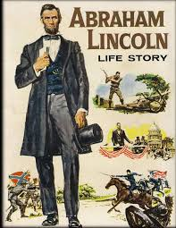
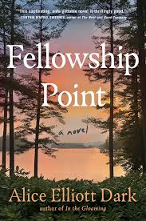
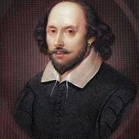
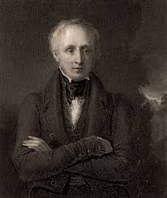
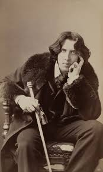

Let's Go To the Books World!!

Hello BookLovers, You are at the right place. Here you can explore wide varities of books. We cover books
from different areas like Fiction, Technical, Fantasy, Autobiograhy and a lot more. So go on explore...
Happy Reading...
"Reading is important. If you know how to read, then the whole world opens up to you." Barack Obama
Barack Hussein Obama II born August 4, 1961) is an American politician who served as the 44th president of the United States from 2009 to 2017. A member of the Democratic Party, he was the first African-American president in U.S. history. Obama previously served as a U.S. senator representing Illinois from 2005 to 2008, as an Illinois state senator from 1997 to 2004, and as a community service organizer, civil rights lawyer, and university lecturer.
 Abraham Lincoln (/ˈlɪŋkən/ LING-kən; February 12, 1809 – April 15, 1865) was an American lawyer, politician, and statesman, who served as the 16th president of the United States, from 1861 until his assassination in 1865. Lincoln led the United States through the American Civil War, defending the nation as a constitutional union, defeating the insurgent Confederacy, playing a major role in the abolition of slavery, expanding the power of the federal government, and modernizing the U.S. economy.
We are all limited by our habits. In this story, a cat and horse make a deal to cross a river together to enjoy juicy corn in a field on the other side. But the cat’s idiotic habits cause trouble and the horse must not only get them to safety but teach the cat a lesson.
 “A magnificent storytelling feat” (The Boston Globe) story of lifelong friendship between two very different “superbly depicted” (The Wall Street Journal) women with shared histories, divisive loyalties, hidden sorrows, and eighty years of summers on a pristine point of land on the coast of Maine, set across the arc of the 20th century.
| sl.No | Book name | Author | Book id | Price |
|---|---|---|---|---|
| 1 | Abraham Lincoln Life Story | Abraham Lincoln | A124 | 350 |
| 2 | After A Swim | Idries Shah | A125 | 200 |
| 3 | Fellowship Point | Alice Elliot Dark | A126 | 400 |
 No conversation about all-time famous writers, regardless of language, is complete without including William Shakespeare. He is the towering figure in English Literature who changed the complexion and took English drama to new heights. The level of competence and skill showcased by Shakespeare was hardly ever matched by anyone till now. He wrote during the Elizabethan Age. Most of his works were produced during the period from 1591-1611. He is still known for his universal appeal, handle over language and meter like no other. His characterization is unparalleled, which came to the forefront, especially in his tragedies. Some of his most famous works include “Hamlet,” “King Lear,” “Macbeth,” and more....
 When you talk about poetry and famous poets, the conversation must start with Wordsworth. He single-handedly brought a trend in English Literature. He is so famous for his poetry that his name can be synonymously used for Romanticism. His work can be best defined as imbibed with an appreciation for nature and the tender side of life and emotion. His influence on his contemporary and later generations is immense. He is best known for Lyrical Ballad, which was co-written by S.T. Coleridge. He wrote plenty of other amazing poetry that is still read to this day. Some of his most popular works include “I Wandered Lonely as a Cloud,” “The Solitary Reaper,” “The Lucy Poems,” and more...
 A literary genius known for his wit, humour, and exploration of societal norms, Oscar Wilde holds a significant place in English Literature. His works are known for their sharp social commentary, and he was one of the prominent playwrights of the late 19th century. Wilde’s most famous play, “The Importance of Being Earnest,” is a classic of comedic theatre, and his novel “The Picture of Dorian Gray” remains a thought-provoking masterpiece. His ability to blend satire with a profound understanding of human behaviour makes his works timeless and widely celebrated....